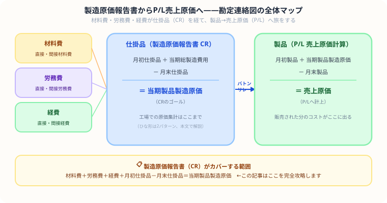

【簿記2級】製造原価報告書（CR）の書き方を完全解説
ひな形・配賦差異・他勘定振替まで例題つき
こんにちは、大谷です！
実は、今回紹介する工業簿記のラスボス「製造原価報告書（CR）」ですが、僕が初めて解いたとき、材料費・労務費・経費が仕掛品のT字勘定にどんどん流れ込んでいく複雑なつながりを見て、「うわっ、なんじゃこりゃ、どの数字がどこへ消えたのか全然わからん……！」と頭が完全にフリーズしました（笑）。
でも実はこの論点の正体は【原価の旅（バトンリレー）】です。工場で発生したコストが仕掛品ボックスの中で合体し、完成品として「当期製品製造原価」という名のバトンに変わり、そのまま製品ボックスへスライドして、最後はP/Lの売上原価としてゴールする——たったこれだけのシンプルな旅なんです。
今回は、このバトンリレーをゲーム感覚で攻略できるよう、ボックス図と一緒に僕なりの解き方をお届けします！
また、記事の末尾のほうにある【いいねボタン】をポチッと押してもらえると、めちゃくちゃ嬉しいです！
- CRのひな形は2種類——要素別と直接費・間接費別。試験頻出は直接費・間接費別
- 材料費・労務費は「消費額」を計算してから記入——期首＋仕入－期末のパズルを解く
- 製造間接費は「予定配賦額」をCRに記入——配賦差異はCRの末尾かP/Lで調整
- 仕掛品ボックスの右側に「他勘定振替」「異常仕損」がある問題が頻出——引き算で消す
🗺️ まず全体像を把握する——勘定連絡図で原価の「旅」を一発理解
製造原価報告書は「仕掛品勘定の明細書」。3費目の当月消費額と月初・月末仕掛品から当期製品製造原価を導く構造です。
製造原価報告書（CR）の役割を理解するには、まず「工場で発生したコストが最終的にP/L（損益計算書）の売上原価へ辿り着くまでの流れ」を頭に入れることが大切です。次の図解がその全体像を一枚で示しています。

① 図解の「たし算エリア」と「結果エリア」の読み方
この図の仕掛品ボックスと製品ボックスには、共通の読み方があります。どちらも左右で役割が決まっています。
たし算エリア
結果エリア
左側の合計から右下の月末を引くと、右上のゴールが求まるというシンプルな構造です。
左側（たし算エリア）に月初と当期投入を足す ＝ 数式の「月初＋当期投入」
右下（月末）を引く ＝ 数式の「－月末」
残った右上がゴール ＝ 数式の「＝当期製品製造原価 or 売上原価」
公式を丸暗記しなくても、図の「左から右下を引く→右上が求まる」という形を覚えるだけで、どんな問題でも手が動くようになります。
② ここが最大のつながりポイント！——仕掛品ボックスから製品ボックスへのバトンリレー
この図で最も大切な部分は、仕掛品（しかかりひん）ボックスの「右上のゴール（当期製品製造原価〔とうき せいひん せいぞう げんか〕）」で求めた数字が、そのまま製品（せいひん）ボックスの「たし算エリア（左下）」へスライドして引き継がれる点です。
月初仕掛品 ＋ 当期総製造費用
右下：月末仕掛品
右上 ★：当期製品製造原価
← この数字を次へ渡す
そのまま
スライド
月初製品
＋ 当期製品製造原価 ★（↑ここへ届く）
右下：月末製品
右上：売上原価 → P/Lへ
製造原価報告書（CR）で求めた「当期製品製造原価」という数字が、そのままP/Lの売上原価計算の出発点になります。工場（CR）で計算した原価が、販売（P/L）の世界へバトンとして渡される——この連動を意識しておくと、第4問・第5問の財務諸表問題で「どの数字をどこへ書けばいいか」が迷わなくなります。
📋 製造原価報告書（CR）のひな形2パターン——試験に出るのはどちら？
CRには2種類の形式があります。試験問題の指定に従って使い分けます。
材料費・労務費・経費の要素ごとに集計する形式。
- 材料費（直接＋間接）
- 労務費（直接＋間接）
- 経費（直接＋間接）
- → 当期総製造費用
直接原価と製造間接費を分けて集計する形式。配賦差異の問題で必須。
- 直接材料費
- 直接労務費
- 直接経費
- 製造間接費（予定配賦額）
- → 当期総製造費用
本格的なCRのひな形（直接費・間接費別）
| 製造原価報告書の項目 | 金額 | ポイント |
|---|---|---|
| Ⅰ 直接材料費 | 50,000 | 消費額を計算してから記入 |
| Ⅱ 直接労務費 | 40,000 | 消費額を計算してから記入 |
| Ⅲ 直接経費 | 5,000 | |
| Ⅳ 製造間接費 | 30,000 | ⚠️ 実際ではなく予定配賦額を入れる |
| 当期総製造費用 | 125,000 | Ⅰ〜Ⅳの合計 |
| 加：期首仕掛品棚卸高 | 15,000 | プラスする |
| 合 計 | 140,000 | |
| 減：期末仕掛品棚卸高 | （25,000） | マイナスする |
| 製造間接費配賦差異（不利） | 2,000 | ⚠️ CRで調整する場合のみ |
| 当期製品製造原価 | 117,000 | これをP/Lの売上原価計算へ |
🔢 ① 材料費の「消費額」計算パズル——期首＋仕入－期末
試験の問題文には「材料費 XX円」とそのまま与えられません。材料を「いくら使ったか（消費額）」を自分で計算してからCRに記入します。
期首材料棚卸高：20,000円、当期材料仕入高：80,000円、期末材料棚卸高：10,000円。直接材料費の消費額を求めなさい。
期首材料（20,000）＋ 当期仕入（80,000）－ 期末材料（10,000）＝ 消費額 90,000円
期末に余った材料の分は「まだ使っていない」ので原価になりません。期末材料を引いた「消費額」がCRに入ります。問題で「当期材料仕入高」が与えられていたら、必ずこの計算を挟みましょう。
💴 ② 労務費の「当月消費額」計算——未払の調整がある
労務費も「支払った額」ではなく「当月に消費した額」を使います。前月の未払分と当月の未払分で調整が必要です。
当期支払賃金：60,000円、前月末未払賃金：5,000円、当月末未払賃金：8,000円。当月消費額を求めなさい。
当期支払（60,000）－ 前月未払（5,000）＋ 当月未払（8,000）＝ 消費額 63,000円
⚙️ ③ 製造間接費——実際配賦 vs 予定配賦でCRの書き方が変わる
簿記2級の工場では製造間接費を「予定配賦」するケースが大半です。実際にかかった額とは違う数字をCRに書くことになります。
| 配賦方法 | CRに書く数字 | 差異の発生 |
|---|---|---|
| 実際配賦 | 実際発生額 | 差異なし |
| 予定配賦（試験頻出） | 予定配賦額（＝予定配賦率×実際操業度） | 配賦差異が発生する |
実際発生額が110,000円でも、予定配賦額が100,000円なら「100,000円」をCRに記入します。差額の10,000円（不利差異）は、CRの末尾かP/Lで別途調整します（次のセクションで解説）。
配賦差異の計算
予定配賦額 ＝ 1,000円 × 100h ＝ 100,000円 ←CRに記入するのはこちら
配賦差異 ＝ 予定（100,000）－ 実際（110,000）＝ ▲10,000円（不利差異）
📊 ④ 配賦差異の調整場所——CRで直すか・P/Lで直すか
配賦差異を「どこで調整するか」は問題文の指示で100%決まります。2つのパターンを整理します。
「当期製品製造原価は実際原価で示せ」という指示があるとき。
- CRの製造間接費には予定配賦額を記入
- 仕掛品の計算が終わった後（当期製品製造原価の直前）で差異を加算
- 不利差異（実際 > 予定）→ 加算（＋）
- 有利差異（予定 > 実際）→ 減算（－）
「差異は売上原価に賦課する」という指示があるとき。
- CRの中は予定のまま通す→ 当期製品製造原価も予定金額
- P/Lの売上原価の欄で差異を加算・減算する
- 不利差異 → P/Lの売上原価に加算（売上原価が増える）
不利差異＝「予定より実際の方が多くかかった」ということ。実際のコストに合わせるため、不足していた分を足し上げます。
パターンBのP/L売上原価欄——差異はここに登場する
パターンBでは製造原価報告書（CR）の中は予定金額のまま通します。P/Lの売上原価の欄に配賦差異の行を追記します。
| 損益計算書（売上原価の部） | 金額 | ポイント |
|---|---|---|
| 期首製品棚卸高 | 5,000 | |
| 当期製品製造原価（CRから） | 112,000 | 予定金額のままCRから持ってくる |
| 合 計 | 117,000 | |
| 減：期末製品棚卸高 | （20,000） | |
| 差引（予定売上原価） | 97,000 | |
| 製造間接費配賦差異（不利） | ＋2,000 | ⚠️ CRにはなし。ここで調整 |
| 売上原価（実際原価ベース） | 99,000 |
CRを先に完成させて「当期製品製造原価 ○○○円」を出したら、その数字をP/Lの当期製品製造原価の欄にそのまま書きます。差異をCRの中に書いてはいけません。P/Lの「差引売上原価の下の行」に配賦差異が入るレイアウトを試験会場でも書けるようにしましょう。
📦 ⑤ 仕掛品ボックスの「右側」——他勘定振替と異常仕損
仕掛品ボックス（T字勘定）の右側（貸方）に入るのは期末仕掛品だけではありません。
- 他勘定振替——仕掛品を機械の修繕など製品製造以外に使った分（修繕費などへ振替）
- 異常仕損費——不注意などで発生した大失敗による廃棄損（特別損失へ）
これらの分を右側に出すと、その分だけ「当期製品製造原価」が小さくなります。
当期総製造費用：150,000円、期首仕掛品：20,000円、期末仕掛品：30,000円、他勘定振替（修繕費）：5,000円、異常仕損費：10,000円。当期製品製造原価を求めなさい。
仕掛品ボックス（T字勘定）
170,000 － 30,000（期末） － 5,000（他勘定振替） － 10,000（異常仕損） ＝ 当期製品製造原価 125,000円
製造原価報告書は「無事に完成した製品のコスト」を報告する書類です。「途中で修繕に流用した分」や「失敗してゴミになった分」をそのまま残すと、完成品の原価が不当に膨らんでしまいます。だから右側に出して（引いて）原価から追い出します。
CRへの最終アウトプット（他勘定振替・仕損あり）
| 製造原価報告書の項目 | 金額 | 補足 |
|---|---|---|
| 当期総製造費用 | 150,000 | |
| 加：期首仕掛品棚卸高 | 20,000 | |
| 合 計 | 170,000 | |
| 減：期末仕掛品棚卸高 | （30,000） | |
| 他勘定振替高 | （5,000） | 製品以外への流用分を引く |
| 異常仕損費 | （10,000） | 失敗分を特別損失へ追い出す |
| 当期製品製造原価 | 125,000 | 完成品の正しいコスト |
🔗 ⑥ 仕掛品→製品→P/Lのバトンリレー——全体の流れを一枚で見る
CRで計算した「当期製品製造原価」は、そのまま製品ボックスの入り口になります。工業簿記で最も重要なこのバトンリレーを一枚の図で整理します。
リレー
① 「当期製品製造原価」は工場の出口であり倉庫の入り口——仕掛品ボックス右側の数字が、製品ボックス左側へそのままスライドします。
② 左の合計 ＝ 右の合計のパズル——仕掛品ボックスは「期末仕掛品＋他勘定振替＋当期製品製造原価」で貸方を埋めます。
③ 担当する書類が違う——仕掛品ボックス ＝ 製造原価報告書（CR）、製品ボックスの売上原価 ＝ 損益計算書（P/L）。
📝 総合例題——配賦差異＋他勘定振替が同時に出た場合
以下のデータから製造原価報告書を作成し、当期製品製造原価を求めなさい。
- 直接材料費消費額：50,000円、直接労務費消費額：40,000円
- 製造間接費：予定配賦率 300円/h、実際操業度 100h、実際発生額 32,000円
- 期首仕掛品：15,000円、期末仕掛品：20,000円
- 他勘定振替（修繕費）：3,000円
- 配賦差異はCR末尾で調整する（パターンA）
解答手順
| 製造原価報告書 | 金額 |
|---|---|
| Ⅰ 直接材料費 | 50,000 |
| Ⅱ 直接労務費 | 40,000 |
| Ⅳ 製造間接費（予定配賦額） | 30,000 |
| 当期総製造費用 | 120,000 |
| 加：期首仕掛品 | 15,000 |
| 合 計 | 135,000 |
| 減：期末仕掛品 | （20,000） |
| 他勘定振替高 | （3,000） |
| 製造間接費配賦差異（不利） | ＋2,000 |
| 当期製品製造原価 | 114,000 |
📋 まとめ：製造原価報告書 解き方チェックリスト
この記事が少しでも参考になったら……
製造原価報告書は、公式の丸暗記ではなく「仕掛品ボックス→製品ボックスへのバトンリレー」というたった1つのパズルの型を掴めば、第4問の確実な得点源になります。
僕の執筆のモチベーション維持のために、この下にある【いいねボタン】をポチッと押してもらえると、めちゃくちゃ嬉しいです！
よくある質問
T字勘定で有利差異・不利差異を判断する方法、シュラッター図による予算差異・操業度差異の分解、差異の仕訳まで、製造間接費の詳細は下記で解説しています。
製造間接費の予定配賦・配賦差異を見る →